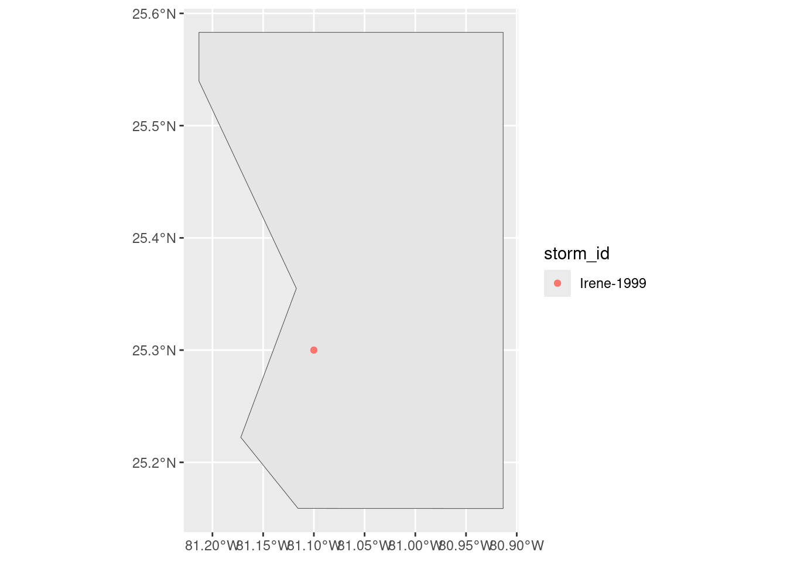

library(readr)
library(tidyverse)
library(ggplot2)
library(drat)
addRepo("geanders")
update.packages("hurricaneexposure")
update.packages("hurricaneexposuredata")
library(hurricaneexposure)
library(hurricaneexposuredata)
library(sf)
library(spData)
library(leaflet)
library(foreach)
library(doParallel)
library(lubridate)
library(grid)
library(gtable)
library(gridExtra)
library(png)Visualizing the impact of hurricanes on mangroves over time
Introduction:
Mangrove trees are a very important aspect of many coastal ecosystems. Many of these areas are also impacted by hurricanes, therefore it is beneficial to understand how hurricanes damage mangrove trees and how long it takes trees to recover from said damage. Following Hurricane Andrew in 1992 permanent study plots were established, then more were added to examine historic areas of study. In total there are 23 plots with data spanning 1992-2011. The goal of this project is to visualize many different aspects of how individual mangroves, different mangrove species and the plots overall respond to hurricanes over time.
Materials and Methods:
Load libraries
Load data
data("us_states")
data("hurr_tracks")
EVG_raw_data <- read.csv("data/Everglades_Mangrove_Vegetation_plot_data.csv")Clean up data
#create the study area bounding box
bbox_coords <- c(-81.2133, 25.5831,-80.9134, 25.1589)
#create a polygon from the bounding box
bbox_polygon <- st_as_sf(st_sfc(st_polygon(list(matrix(c(
bbox_coords[1], bbox_coords[2],
bbox_coords[3], bbox_coords[2],
bbox_coords[3], bbox_coords[4],
bbox_coords[1], bbox_coords[4],
bbox_coords[1], bbox_coords[2]
), ncol = 2, byrow = TRUE))), crs = 4269))
study_crs <- st_crs(bbox_polygon)
FL_state <- filter(us_states, NAME == "Florida")
study_area <- st_crop(us_states, bbox_polygon)
EVG_tidy <- EVG_raw_data %>%
subset(dbh_cm != "NA") %>%
group_by(plot_ID) %>%
mutate(across(contains("date"), ~ mdy(.))) %>%
arrange(., date)
EVG_tidy_spat <- EVG_tidy %>%
st_as_sf(coords = c("longitude", "latitude"),
crs = study_crs)
EVG_plots <- EVG_tidy_spat %>%
distinct(plot_ID, geometry)Results:
Plot spatial distribution of study plots
plot_dist <- leaflet(EVG_tidy_spat)%>%
addTiles()%>%
fitBounds(., lng1 = -81.2133, lat1 = 25.5831,
lng2 = -80.9134, lat2 = 25.1589)%>%
addMarkers(data = EVG_plots)
plot_dist Plot hurricane tracks passing through the study area between 1992-2011
hurr_paths <- map_tracks(storms = c("Andrew-1992","Irene-1999",
"Katrina-2005", "Wilma-2005"))
hurr_paths_spat <- hurr_paths[["layers"]][[2]][["data"]] %>%
st_as_sf(.,coords = c("longitude", "latitude"),
crs = 4269) %>%
st_crop(.,FL_state)
ggplot() +
geom_sf(data = FL_state) +
geom_sf(data = study_area, fill = "green")+
geom_sf(data = hurr_paths_spat, aes(color = storm_id))
sites <- factor(EVG_tidy$plot_ID)
cl <- makeCluster(4)
registerDoParallel(cl)
results <- foreach(i = levels(sites),
.packages = c("dplyr", "ggplot2"),
.combine = "rbind") %dopar% {
plot_makeup <- EVG_tidy %>%
filter(plot_ID == i) %>%
group_by(.,plot_ID, date, scientific_name) %>%
summarize(individual_count = n())
bar_chart <- ggplot(data = plot_makeup,
aes(fill= scientific_name,
y = individual_count,
x = date)) +
geom_bar(position="fill", stat = "identity")+
ggtitle(paste("Plot", i))
ggsave(filename = paste("plot_", i, ".png", sep = ""),
plot = bar_chart)}
stopCluster(cl)Conclusions:
[~200 words]
Clear summary adequately describing the results and putting them in context. Discussion of further questions and ways to continue investigation.
References:
Doyle, T. W., Smith, T. J., & Robblee, M. B. (1995). Wind Damage Effects of Hurricane Andrew on Mangrove Communities Along the Southwest Coast of Florida, USA. Journal of Coastal Research, 159–168.
Laura C Feher, Thomas J. Smith III, Gordon H Anderson, Ginger Tiling-Range, Karen M. Balentine, Greg A Ward, Kevin R. T. Whelan, Christa L. Walker, Andre Daniels, Michael J Osland, & Fara S. Ilami. (n.d.). Everglades mangrove vegetation data from 23 long-term plots (1992-2011). U.S. Geological Survey. https://doi.org/10.5066/P13DONMU
Smith III, T. J., Anderson, G., Balentine, K., Tiling, G., Ward, G., & Whelan, K. (2009). Cumulative Impacts of Hurricanes on Florida Mangrove Ecosystems: Sediment Deposition, Storm Surges and Vegetation. Wetlands, 29, 24–34. https://doi.org/10.1672/08-40.1